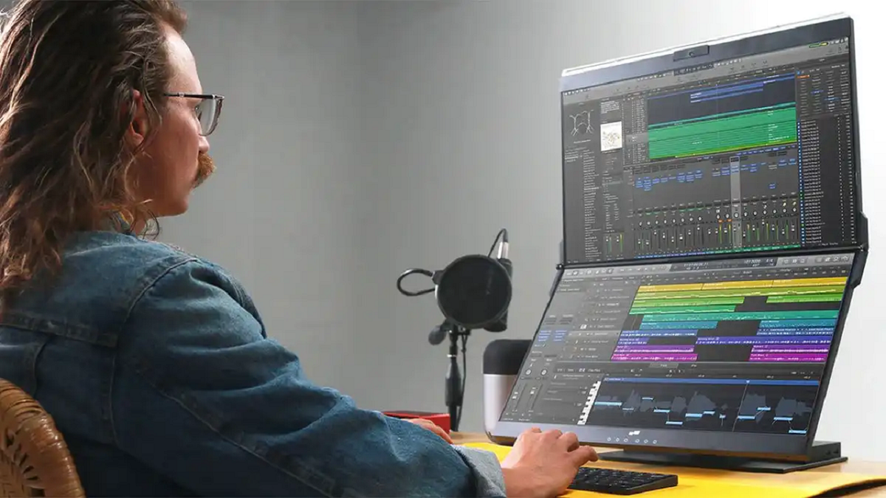

Mobile Pixels Geminos
Некоторые пользователи подключают к компьютеру два монитора и ставят их рядом друг с другом. Mobile Pixels Geminos предлагает другое решение. Это сворачиваемая пара из двух мониторов размером 24 дюйма с разрешением 1080p. Преимущество здесь в том, что оба монитора находятся по центру поля зрения. Высоту и угол наклона можно регулировать при помощи шарнирного и выдвижного механизмов подставки. Такая конструкция позволяет экономить место на рабочем столе. Мониторы оснащены веб-камерой и микрофоном, у них есть док-станция 10-в-1, входы USB-C и HDMI, совместимость с Windows, macOS и игровыми консолями. Каждый монитор можно подключать к разным устройствам. Этот продуманный дизайн учитывает множество сценариев применения. На своём сайте производитель просит за него $630.